Optimal solution is x* = (, 0, 0,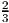,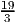, 0), with value 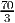.
The change in the final tableau is to modify the final reduced costs by the 4 given parameters. The optimal tableau to the original brewery problem is Tableau T3c on page 66 of the text. The prices become 90 + ρ, 150 + σ, 60 + λ, 70 + α, so the costs in the initial tableay T0 are the negatives of these. Thus, the modified final tableau is
Pivoting on the indicated positions gives a canonical form tableau:
Thus, to still be in optimal form, we require
- a.
- We introduce slacks for constraints A-E and put the problem in standard form. We
have
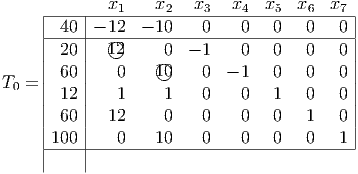 - b.
- Pivoting on the 2 circled entries gives a canonical form tableau:
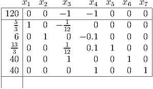 Bring x3 into the basis. By the minimum ratio rule, x6 leaves the basis.
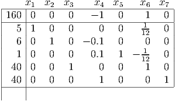 Bring x4 into the basis. By the minimum ratio rule, x5 leaves the basis. This gives the optimal tableau T*:
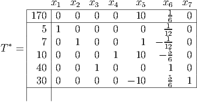 - c.
- The pivot matrix is not quite the last 5 columns of T*, because the x
3 and x4 columns
have the wrong sign in T0. Nonetheless, all we have to do to the last 5 columns is
change the sign of the x3 and x4 columns, and append the first identity column at the
beginning:
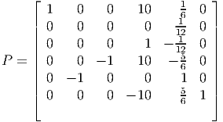 It can be checked that PT0 = T*.
- d.
- Initial tableau becomes
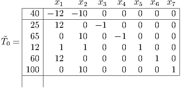 Premultiplying P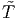0 gives the modified final tableau under the more stringent conditions:

Since the tableau is still in optimal form, the optimal point is still the previously found x* = (5, 7)T .
- a.
- You have supply of 10 at the factory each month from manufacturing product.
You have customer demand each month. The warehouse is at the factory (different
from my hint). Can calculate the cost to produce in one month and supply in
another as the inventory cost to get to the delivery month and then ship in
the delivery month. So, eg, to produce in January and deliver in March costs
$(2+1+1)=$4 per unit.

- b.
-
Give the missing arcs high cost of 100. Transportation tableau:
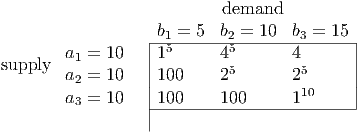 Solution obtained by NW corner rule is shown.
- c.
- Can solve as a transportation problem. Find dual variables satisfying ui + vj = cij for
basic edges:
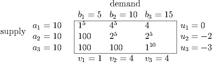 Calculate reduced costs cij - ui - vj:
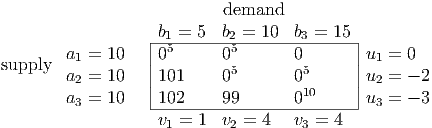 Solution:

- d.
- Since arc (1, 3) has reduced cost 0, we can introduce it into the basis to get alternative
optimal solutions:

Taking t = 5 gives the alternative optimal BFS: